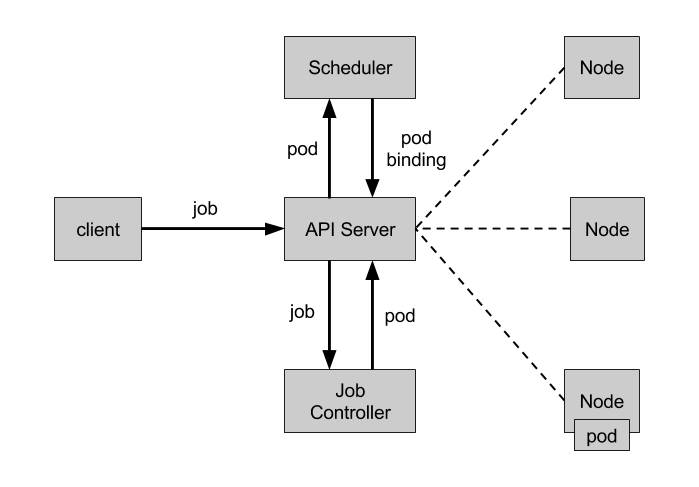

Job
Job 负责批量处理短暂的一次性任务 (short lived one-off tasks)，即仅执行一次的任务，它保证批处理任务的一个或多个 Pod 成功结束。
API 版本对照表
| Kubernetes 版本 | Batch API 版本 | 默认开启 |
|---|---|---|
| v1.5+ | batch/v1 | 是 |
Job 类型
Kubernetes 支持以下几种 Job：
- 非并行 Job：通常创建一个 Pod 直至其成功结束
- 固定结束次数的 Job：设置
.spec.completions，创建多个 Pod，直到.spec.completions个 Pod 成功结束 - 带有工作队列的并行 Job：设置
.spec.Parallelism但不设置.spec.completions，当所有 Pod 结束并且至少一个成功时，Job 就认为是成功
根据 .spec.completions 和 .spec.Parallelism 的设置，可以将 Job 划分为以下几种 pattern：
| Job 类型 | 使用示例 | 行为 | completions | Parallelism |
|---|---|---|---|---|
| 一次性 Job | 数据库迁移 | 创建一个 Pod 直至其成功结束 | 1 | 1 |
| 固定结束次数的 Job | 处理工作队列的 Pod | 依次创建一个 Pod 运行直至 completions 个成功结束 | 2+ | 1 |
| 固定结束次数的并行 Job | 多个 Pod 同时处理工作队列 | 依次创建多个 Pod 运行直至 completions 个成功结束 | 2+ | 2+ |
| 并行 Job | 多个 Pod 同时处理工作队列 | 创建一个或多个 Pod 直至有一个成功结束 | 1 | 2+ |
Job Controller
Job Controller 负责根据 Job Spec 创建 Pod，并持续监控 Pod 的状态，直至其成功结束。如果失败，则根据 restartPolicy（只支持 OnFailure 和 Never，不支持 Always）决定是否创建新的 Pod 再次重试任务。

Job Spec 格式
- spec.template 格式同 Pod
- RestartPolicy 仅支持 Never 或 OnFailure
- 单个 Pod 时，默认 Pod 成功运行后 Job 即结束
.spec.completions标志 Job 结束需要成功运行的 Pod 个数，默认为 1.spec.parallelism标志并行运行的 Pod 的个数，默认为 1spec.activeDeadlineSeconds标志失败 Pod 的重试最大时间，超过这个时间不会继续重试
一个简单的例子：
apiVersion: batch/v1
kind: Job
metadata:
name: pi
spec:
template:
metadata:
name: pi
spec:
containers:
- name: pi
image: perl
command: ["perl", "-Mbignum=bpi", "-wle", "print bpi(2000)"]
restartPolicy: Never
# 创建 Job
$ kubectl create -f ./job.yaml
job "pi" created
# 查看 Job 的状态
$ kubectl describe job pi
Name: pi
Namespace: default
Selector: controller-uid=cd37a621-5b02-11e7-b56e-76933ddd7f55
Labels: controller-uid=cd37a621-5b02-11e7-b56e-76933ddd7f55
job-name=pi
Annotations: <none>
Parallelism: 1
Completions: 1
Start Time: Tue, 27 Jun 2017 14:35:24 +0800
Pods Statuses: 0 Running / 1 Succeeded / 0 Failed
Pod Template:
Labels: controller-uid=cd37a621-5b02-11e7-b56e-76933ddd7f55
job-name=pi
Containers:
pi:
Image: perl
Port:
Command:
perl
-Mbignum=bpi
-wle
print bpi(2000)
Environment: <none>
Mounts: <none>
Volumes: <none>
Events:
FirstSeen LastSeen Count From SubObjectPath Type Reason Message
--------- -------- ----- ---- ------------- -------- ------ -------
2m 2m 1 job-controller Normal SuccessfulCreate Created pod: pi-nltxv
# 使用'job-name=pi'标签查询属于该 Job 的 Pod
# 注意不要忘记'--show-all'选项显示已经成功（或失败）的 Pod
$ kubectl get pod --show-all -l job-name=pi
NAME READY STATUS RESTARTS AGE
pi-nltxv 0/1 Completed 0 3m
# 使用 jsonpath 获取 pod ID 并查看 Pod 的日志
$ pods=$(kubectl get pods --selector=job-name=pi --output=jsonpath={.items..metadata.name})
$ kubectl logs $pods
3.141592653589793238462643383279502...
固定结束次数的 Job 示例
apiVersion: batch/v1
kind: Job
metadata:
name: busybox
spec:
completions: 3
template:
metadata:
name: busybox
spec:
containers:
- name: busybox
image: busybox
command: ["echo", "hello"]
restartPolicy: Never
Indexed Job
通常，当使用 Job 来运行分布式任务时，用户需要一个单独的系统来在 Job 的不同 worker Pod 之间分配任务。比如，设置一个工作队列，逐一给每个 Pod 分配任务。Kubernetes v1.21 新增的 Indexed Job 会给每个任务分配一个数值索引，并通过 annotation batch.kubernetes.io/job-completion-index 暴露给每个 Pod。使用方法为在 Job spec 中设置 completionMode: Indexed。
Pod 自动清理
TTL 控制器用来自动清理已经结束的 Pod，如处于 Complete 或 Failed 状态的 Job。Pod 停止之后的 TTL 可以通过 .spec.ttlSecondsAfterFinished 来设置。
注意，该特性要求集群中各节点（包括控制节点）的时间一致，比如在所有节点中运行 NTP 服务。
暂停和重启 Job
从 v1.21 开始，可通过 .spec.suspend 暂停和重启 Job：
apiVersion: batch/v1
kind: Job
metadata:
name: myjob
spec:
suspend: true
parallelism: 1
completions: 5
template:
spec:
...
当 Job 暂停后，Job conditions 中会新增一条 Job 暂停的事件：
$ kubectl get jobs/myjob -o yaml
apiVersion: batch/v1
kind: Job
# .metadata and .spec omitted
status:
conditions:
- lastProbeTime: "2021-02-05T13:14:33Z"
lastTransitionTime: "2021-02-05T13:14:33Z"
status: "True"
type: Suspended
startTime: "2021-02-05T13:13:48Z"
Bare Pods
所谓 Bare Pods 是指直接用 PodSpec 来创建的 Pod（即不在 ReplicaSets 或者 ReplicationCtroller 的管理之下的 Pods）。这些 Pod 在 Node 重启后不会自动重启，但 Job 则会创建新的 Pod 继续任务。所以，推荐使用 Job 来替代 Bare Pods，即便是应用只需要一个 Pod。